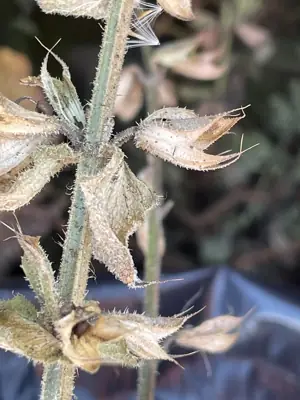

pranet · 出典付きの植物図鑑
クラリセージ
Salvia sclarea L. · Lamiaceae

クラリセージ はシソ科アキギリ属の1種で二年草のハーブ。別名はオニサルビア。種小名の sclarea はラテン語の clara（澄んだ、清浄な）に由来し、本種の果実を眼の洗浄に用いたことに基づく。英名のclary sage（クラリセージ）の clary も、同じ用途に由来する clear eye が転化したものとされる。 リンネの『植物の種』で記載された植物、つまり最初に学名が与えられた植物の1つである。セージ（ヤクヨウサルビア）とは同属別種。高さ50–150センチメートルで直立し、上部で分枝する（図1）。葉は対生し、しわ状、葉縁に鋸歯があり、基部が心形で先端は尖る（図1）。花期は春から夏、花は淡紫色からクリーム色の唇形花で上唇が大きく湾曲しており、緑色から紫桃色で先端が尾状に尖った大きな苞の上につき、茎頂に集まって円錐花序を形成する（図1）。地中海沿岸から中央アジアに分布し、古くから薬用などに用いられ、現在では精油原料として世界各地で栽培されている。
出典: Wikipedia 日本語版「クラリセージ」 · CC BY-SA 4.0
異名: Aethiopis sclarea (L.) Opiz, Salvia altilabrosa Pau, Salvia calostachya Gand., Salvia coarctata Vahl, Salvia haematodes Scop., Salvia lucana Cavara & Grande, Salvia pamirica Gand., Salvia simsiana Schult., Salvia turkestanica Noter, Sclarea vulgaris Mill.
同定や利用は自己責任でお願いします。この図鑑だけを根拠に野生の植物を食べないでください。
出典
- 学名: World Flora Online Plant List 2026-06 · CC0 1.0
- 名前: Wikipedia の記事名と Wikidata · CC0 1.0（Wikidata）。記事名は事実
- 説明: Wikipedia 日本語版「クラリセージ」 · CC BY-SA 4.0
- 食用・毒性: World Checklist of Useful Plant Species (Diazgranados et al. 2020, RBG Kew) · CC BY 4.0
- 分布: World Checklist of Vascular Plants (WCVP), RBG Kew, version 2026-06-04 · CC BY 3.0
このページは pranet のデータから自動生成しています。コードは MIT、データは項目ごとのライセンス（説明）。